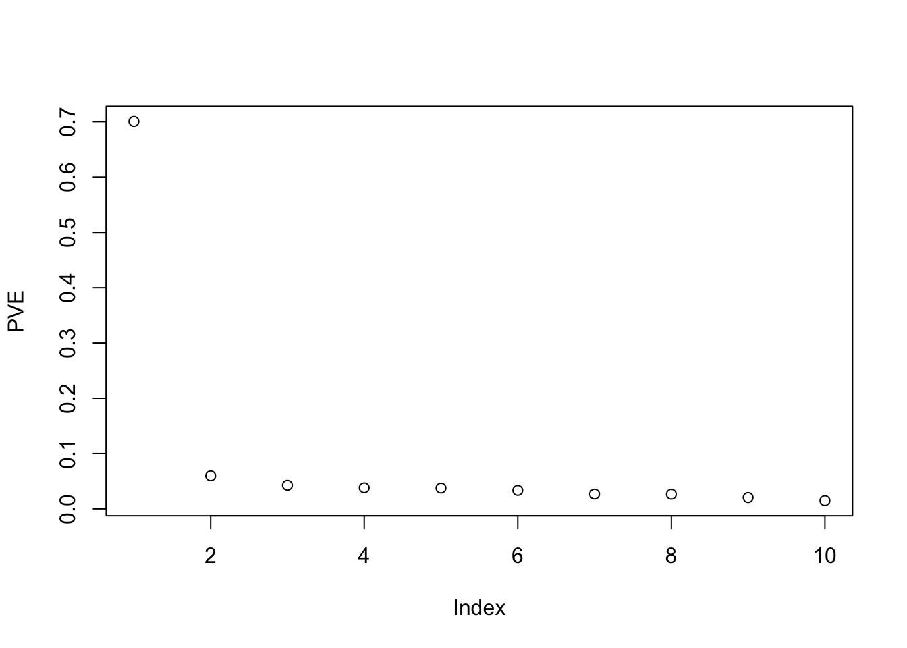
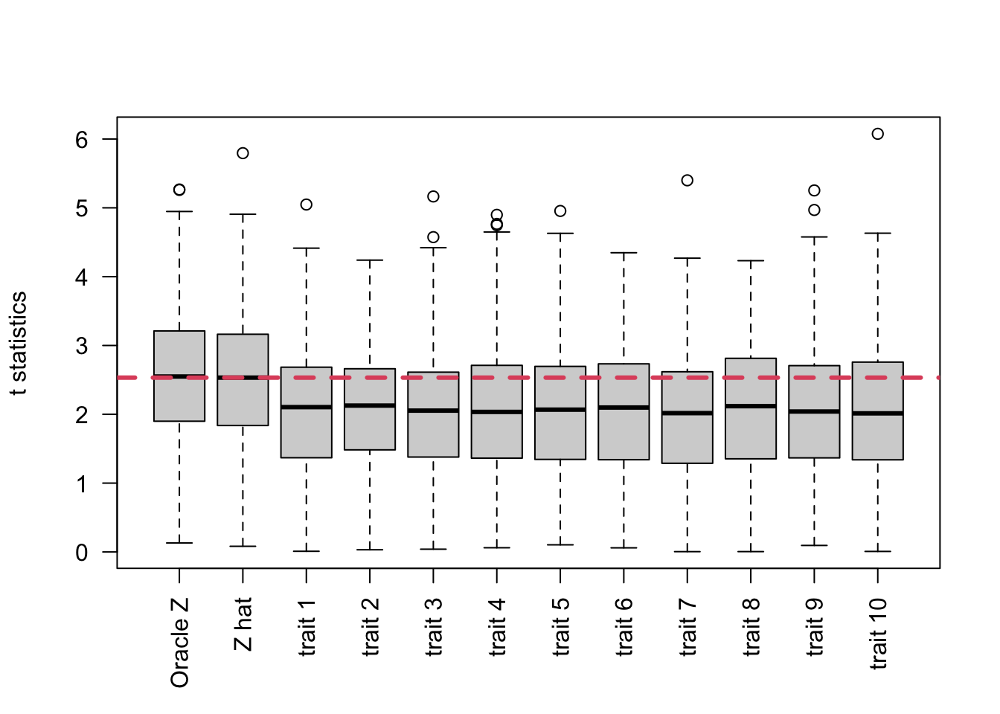
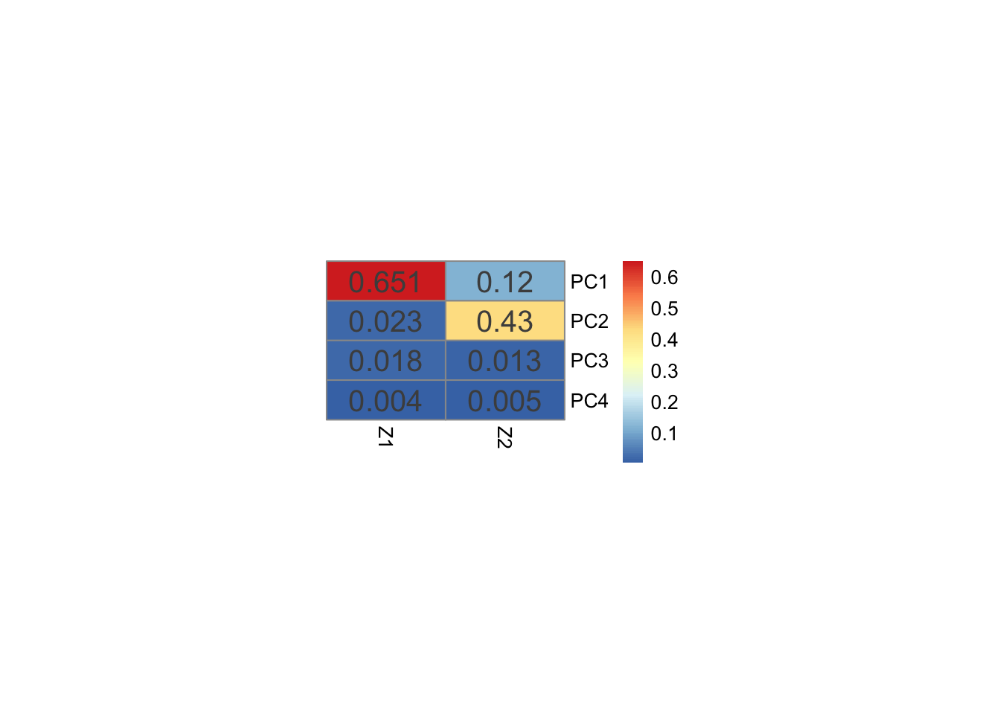
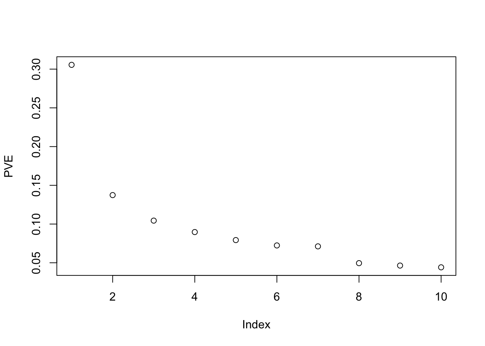
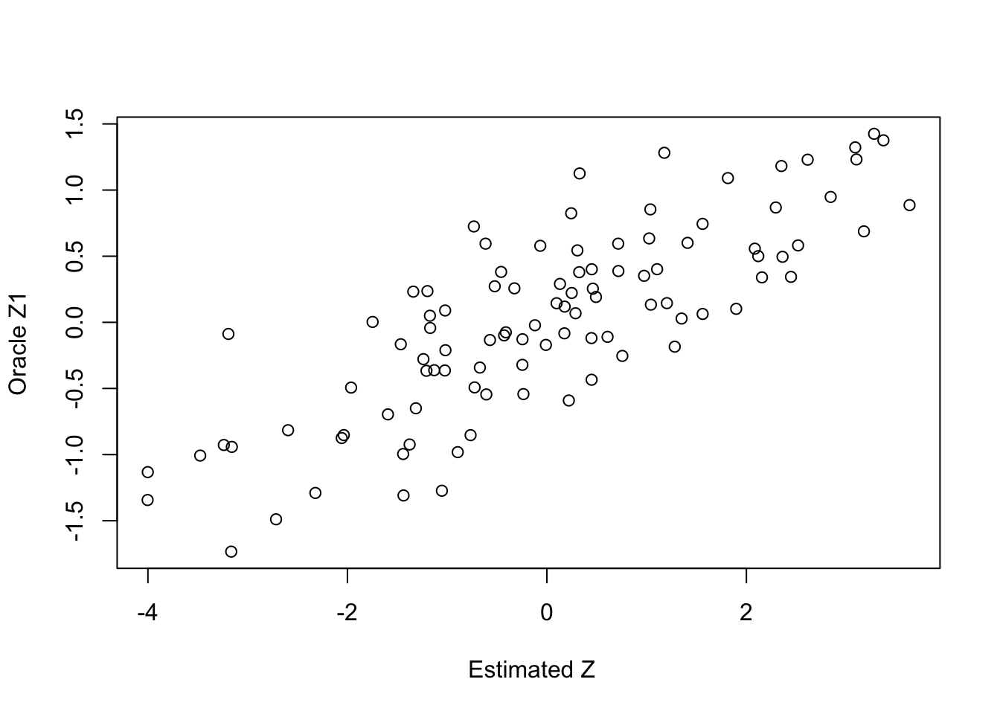
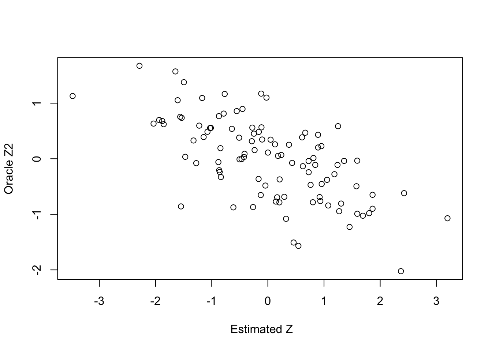
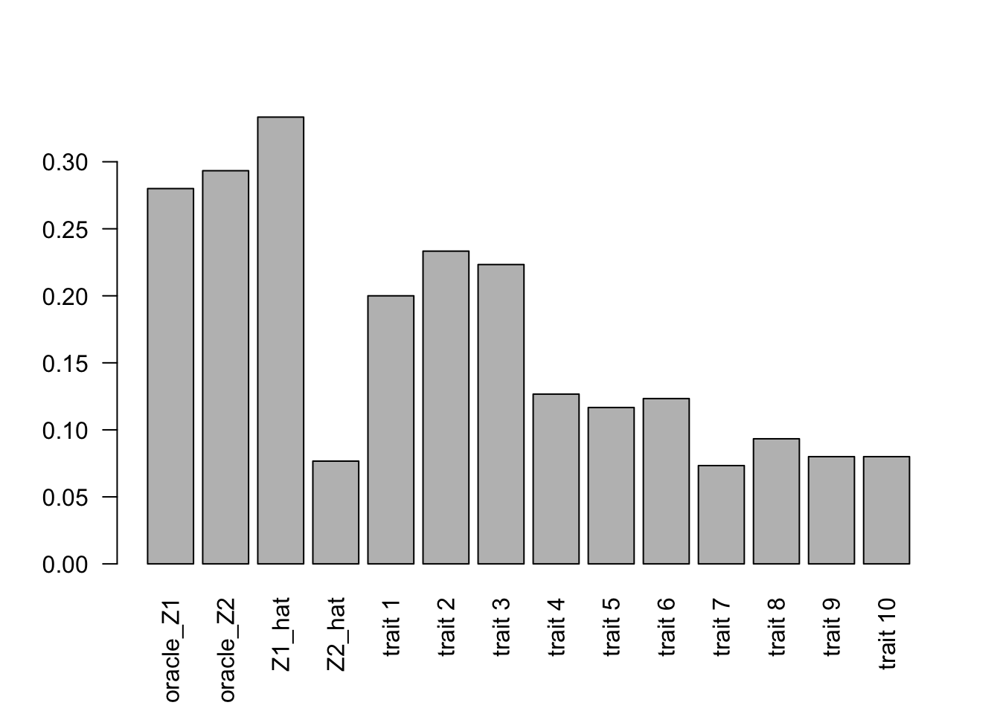
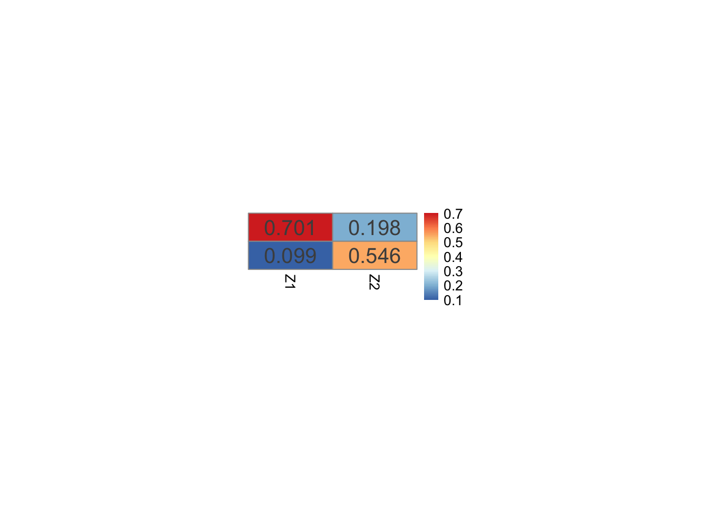
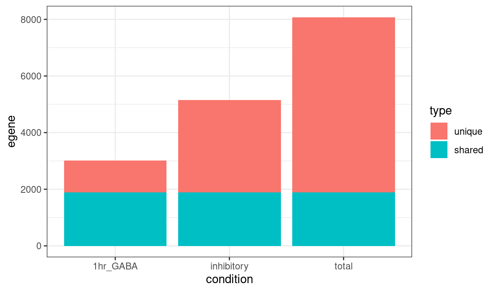

Improving power of single cell eQTL with factorization
Lifan Liang
2025-01-14
Last updated: 2025-05-12
Checks: 7 0
Knit directory: eQTL_methods/
This reproducible R Markdown analysis was created with workflowr (version 1.7.0). The Checks tab describes the reproducibility checks that were applied when the results were created. The Past versions tab lists the development history.
Great! Since the R Markdown file has been committed to the Git repository, you know the exact version of the code that produced these results.
Great job! The global environment was empty. Objects defined in the global environment can affect the analysis in your R Markdown file in unknown ways. For reproduciblity it’s best to always run the code in an empty environment.
The command set.seed(20250106) was run prior to running
the code in the R Markdown file. Setting a seed ensures that any results
that rely on randomness, e.g. subsampling or permutations, are
reproducible.
Great job! Recording the operating system, R version, and package versions is critical for reproducibility.
Nice! There were no cached chunks for this analysis, so you can be confident that you successfully produced the results during this run.
Great job! Using relative paths to the files within your workflowr project makes it easier to run your code on other machines.
Great! You are using Git for version control. Tracking code development and connecting the code version to the results is critical for reproducibility.
The results in this page were generated with repository version b196d33. See the Past versions tab to see a history of the changes made to the R Markdown and HTML files.
Note that you need to be careful to ensure that all relevant files for
the analysis have been committed to Git prior to generating the results
(you can use wflow_publish or
wflow_git_commit). workflowr only checks the R Markdown
file, but you know if there are other scripts or data files that it
depends on. Below is the status of the Git repository when the results
were generated:
Ignored files:
Ignored: .DS_Store
Ignored: .RData
Ignored: .Rhistory
Untracked files:
Untracked: data/neuron_stim_genotype_chr9_2e6-3e6.rds
Untracked: data/susie_code.R
Untracked: data/susie_simulation.zip
Untracked: test_matrixeqtl.R
Unstaged changes:
Modified: data/mixedmodel_res_phi0.02.csv
Modified: data/mixedmodel_res_phi0.03.csv
Modified: data/mixedmodel_res_phi0.04.csv
Modified: data/mixedmodel_res_phi0.05.csv
Modified: data/scalability_snp.csv
Modified: data/twostep_res_phi0.02.csv
Modified: data/twostep_res_phi0.03.csv
Modified: data/twostep_res_phi0.04.csv
Modified: data/twostep_res_phi0.05.csv
Note that any generated files, e.g. HTML, png, CSS, etc., are not included in this status report because it is ok for generated content to have uncommitted changes.
These are the previous versions of the repository in which changes were
made to the R Markdown (analysis/factor_eqtl.Rmd) and HTML
(docs/factor_eqtl.html) files. If you’ve configured a
remote Git repository (see ?wflow_git_remote), click on the
hyperlinks in the table below to view the files as they were in that
past version.
| File | Version | Author | Date | Message |
|---|---|---|---|---|
| Rmd | b196d33 | Lifan Liang | 2025-05-12 | wflow_publish("analysis") |
| html | 1378d46 | Lifan Liang | 2025-02-11 | Build site. |
| Rmd | 2745cfb | Lifan Liang | 2025-02-11 | wflow_publish(c("analysis", "docs")) |
| html | 2745cfb | Lifan Liang | 2025-02-11 | wflow_publish(c("analysis", "docs")) |
| html | 6454858 | Lifan Liang | 2025-02-07 | Build site. |
| Rmd | a6f5a6e | Lifan Liang | 2025-02-07 | wflow_publish(c("analysis", "docs")) |
| html | a6f5a6e | Lifan Liang | 2025-02-07 | wflow_publish(c("analysis", "docs")) |
| html | 8e34ef6 | Lifan Liang | 2025-02-06 | Build site. |
| Rmd | 1fdfaa6 | Lifan Liang | 2025-02-06 | wflow_publish("analysis") |
| html | f3f6328 | Lifan Liang | 2025-02-05 | Build site. |
| Rmd | 0ad82da | Lifan Liang | 2025-02-05 | workflowr::wflow_publish("analysis") |
| html | ca49fde | Lifan Liang | 2025-02-04 | Build site. |
| Rmd | efc7cd7 | Lifan Liang | 2025-02-04 | wflow_publish("analysis") |
| html | a9aaac7 | Lifan Liang | 2025-02-02 | Build site. |
| Rmd | c2a480e | Lifan Liang | 2025-02-02 | wflow_publish("analysis") |
| html | 4adac67 | Lifan Liang | 2025-01-30 | Build site. |
| Rmd | 61fbc6c | Lifan Liang | 2025-01-30 | wflow_publish(c("analysis")) |
| html | 6271530 | Lifan Liang | 2025-01-30 | Build site. |
| Rmd | 4b6acb6 | Lifan Liang | 2025-01-30 | wflow_publish(c("analysis")) |
| html | 9a16b08 | Lifan Liang | 2025-01-24 | Build site. |
| Rmd | da0ab72 | Lifan Liang | 2025-01-24 | wflow_publish("analysis") |
| html | 629cc36 | Lifan Liang | 2025-01-23 | Build site. |
| Rmd | 704016c | Lifan Liang | 2025-01-23 | wflow_publish("analysis") |
| html | 651e5fc | Lifan Liang | 2025-01-22 | Build site. |
| Rmd | da3565b | Lifan Liang | 2025-01-22 | wflow_publish("analysis") |
| html | 6178788 | Lifan Liang | 2025-01-21 | Build site. |
| Rmd | 0a45aff | Lifan Liang | 2025-01-21 | wflow_publish("analysis") |
| html | 7d5eb2d | Lifan Liang | 2025-01-14 | Build site. |
| Rmd | 46baaaf | Lifan Liang | 2025-01-14 | wflow_publish("analysis") |
| html | f0315a3 | Lifan Liang | 2025-01-14 | Build site. |
| Rmd | a21de7d | Lifan Liang | 2025-01-14 | wflow_publish("analysis") |
| html | 3512ba1 | Lifan Liang | 2025-01-14 | Build site. |
| Rmd | 6084625 | Lifan Liang | 2025-01-14 | wflow_publish("analysis") |
| html | 8257db5 | Lifan Liang | 2025-01-14 | Build site. |
| Rmd | c84f460 | Lifan Liang | 2025-01-14 | wflow_publish("analysis") |
| html | 5443906 | Lifan Liang | 2025-01-14 | Build site. |
| Rmd | f93eb42 | Lifan Liang | 2025-01-14 | wflow_publish("analysis") |
| html | fb9f866 | Lifan Liang | 2025-01-14 | Build site. |
| Rmd | c1a2fa7 | Lifan Liang | 2025-01-14 | wflow_publish("analysis") |
Simulation with a known latent factor
sim_factor <- function(alpha=0.25, beta=0.4, eps0=1.0, eps1=0.3){
res <- numeric(6L)
names(res) <- c("beta.Z","score.Z","p.Z",
"beta.y","score.y","p.y")
x = rnorm(100,sd=1)
Z = alpha*x + rnorm(100,sd=eps0)
y = beta*Z + rnorm(100,sd=eps1)
res[c("beta.Z","score.Z","p.Z")] <- summary(lm(Z~x))$coefficients[2,c(1,3,4)]
res[c("beta.y","score.y","p.y")] <- summary(lm(y~x))$coefficients[2,c(1,3,4)]
res
}We generated data with one latent factor \(Z\) that affects one trait, \(Y\). The generative process is as follow:
\[ X \sim Normal(0,1) \\ \epsilon_0 \sim Normal(0,\sigma_0^2) \\ \\ \epsilon_1 \sim Normal(0,\sigma_1^2) \\ Z = \alpha X + \epsilon_0 \\ Y = \beta Z + \epsilon_1 \]
Most parameters are fixed during simulation. We set \(\alpha = 0.25\), \(\sigma_0=1\), In this way, we have: \[ PVE(Z \sim X) =\dfrac{\alpha^2 var(X)}{\alpha^2 var(X) + \sigma_0^2} \approx 5.88\% \] we set \(\beta_1 = 0.4\). Given that :
\[ PVE(Y\sim X)=\dfrac{\alpha^2\beta^2var(X)}{\alpha^2\beta^2var(X)+\beta^2\sigma_0^2+\sigma_1^2} \].
In order to approximate realistic PVE of eQTL, which ranges around 2% ~ 5%, we set \(\sigma_1 \in {0.2,0.3,0.4}\) so that \(PVE(Y_1 \sim X)\) ranges around 3.03% and 4.76%. We compared the t score and P values of regressing X against Y versus X against X. 100 samples were drawn from the simulation each time.
Theoretical power gain
In fact, we can directly derive the power gain from this simple simulation scenario. For instance, let’s focus on \(Y\), we have:
\[ Y = \alpha \beta X + \epsilon_1 + \beta_1 \epsilon_0 \]
Hence, we can derive the expected t score of X:
\[ Tscore(Y \sim X) ^2= \dfrac{N\alpha^2 \beta^2}{\sigma_1^2+\beta^2\sigma_0^2} \] On the other hand, we have: \[ Tscore(Z \sim X)^2 = \dfrac{N\alpha^2}{\sigma_0^2} \] So the expected ratio between the two should be: \[ (\dfrac{Tscore(Z \sim X)}{Tscore(Y \sim X)})^2 = 1 + (\dfrac{\sigma_1}{\sigma_0 \beta})^2 \]
Therefore, we will always gain power if we know the latent factor as ground truth.
Simulation with one unknown common factor
This simulation follows the same scenario as the one above. The difference is that \(Z\) is unknown and there are ten traits (\([Y_1,Y_2,...,Y_{10}\)). All \(\beta\) from \(Z\) to \(Y\) is 0.4. We performed PCA to estimate \(Z\).
sim_10trait <- function(alpha=0.25, beta=0.4, eps0=1.0, eps1=0.3, N=100){
x = rnorm(N,sd=1)
Z = alpha*x + rnorm(N,sd=eps0)
y = matrix(0,nrow = N,ncol=10)
for(i in 1: ncol(y)){
y[,i] <- beta*Z + rnorm(N,sd=eps1)
}
list(x=x,Z=Z,y=y)
}Estimating Z
We used the first principle component as the estimator for Z after standardizing Y. Below is the scatter plot between \(\hat{Z}\) and \(Z\).
set.seed(12)
dat <- sim_10trait()
y1 <- scale(dat$y)
pcs <- prcomp(y1)
z_hat <- pcs$x[,1]
plot(z_hat, dat$Z, ylab="Oracle Z", xlab=" Estimated Z")
Elbow plot seems to suggest one or two PC is sufficient?
plot(pcs$sdev^2/sum(pcs$sdev^2),ylab="PVE")
Power comparison
Repeating the simulations 300 times. Oracle Z has the highest power, followed by \(\hat{Z} \sim x\).
Nrep = 300
factor.res <- matrix(nrow=Nrep,ncol=3)
oracle.res <- matrix(nrow=Nrep,ncol=3)
marg <- list()
marg$beta <- matrix(nrow=Nrep,ncol=10)
marg$tstat <- matrix(nrow=Nrep,ncol=10)
marg$pval <- matrix(nrow=Nrep,ncol=10)
for(i in 1:Nrep) {
dat <- sim_10trait(N=100)
pcs <- prcomp(dat$y,center = T,scale. = T)
z_hat <- pcs$x[,1]
factor.res[i,] <- summary(lm(z_hat~dat$x))$coefficients[2,c(1,3,4)]
oracle.res[i,] <- summary(lm(dat$Z~dat$x))$coefficients[2,c(1,3,4)]
#colnames(marg.res) <- c("beta","tstat","p")
#print(i)
for(j in 1:ncol(dat$y)) {
marg$beta[i,j] <- summary(lm(dat$y[,j]~dat$x))$coefficients[2,1]
marg$tstat[i,j] <- summary(lm(dat$y[,j]~dat$x))$coefficients[2,3]
marg$pval[i,j] <- summary(lm(dat$y[,j]~dat$x))$coefficients[2,4]
}
}
dat1 <- abs(cbind(oracle.res[,2],cbind(factor.res[,2],marg$tstat))) # Combine T statistics
colnames(dat1) <- c("Oracle Z","Z hat",paste0("trait ",1:10))
boxplot(dat1,las=2,ylab="t statistics")
abline(h=median(abs(factor.res[,2])),col=2,lty=2,lwd=3)
The barplot below shows the frequency for P values < 0.05.
dat2 <- cbind(oracle.res[,3],cbind(factor.res[,3],marg$pval)) #combine p values
colnames(dat2) <- c("Oracle Z","Z hat",paste0("trait ",1:10))
barplot(colMeans(dat2<0.05),las=2)
| Version | Author | Date |
|---|---|---|
| 9a16b08 | Lifan Liang | 2025-01-24 |
Frequency of rejecting null (P<0.05) while there is no genetic effect.
Situations where the 10 traits are still largely shared but genotype did not affect the trait \(\alpha=0\).
Nrep = 300
factor.res <- matrix(nrow=Nrep,ncol=3)
oracle.res <- matrix(nrow=Nrep,ncol=3)
marg <- list()
marg$beta <- matrix(nrow=Nrep,ncol=10)
marg$tstat <- matrix(nrow=Nrep,ncol=10)
marg$pval <- matrix(nrow=Nrep,ncol=10)
for(i in 1:Nrep) {
dat <- sim_10trait(N=100, alpha=0)
pcs <- prcomp(dat$y,center = T,scale. = T)
z_hat <- pcs$x[,1]
factor.res[i,] <- summary(lm(z_hat~dat$x))$coefficients[2,c(1,3,4)]
oracle.res[i,] <- summary(lm(dat$Z~dat$x))$coefficients[2,c(1,3,4)]
#colnames(marg.res) <- c("beta","tstat","p")
#print(i)
for(j in 1:ncol(dat$y)) {
marg$beta[i,j] <- summary(lm(dat$y[,j]~dat$x))$coefficients[2,1]
marg$tstat[i,j] <- summary(lm(dat$y[,j]~dat$x))$coefficients[2,3]
marg$pval[i,j] <- summary(lm(dat$y[,j]~dat$x))$coefficients[2,4]
}
}
dat3 <- abs(cbind(oracle.res[,3],cbind(factor.res[,3],marg$pval))) #combine p values
colnames(dat3) <- c("Oracle Z","Z hat",paste0("trait ",1:10))
barplot(colMeans(dat3<0.05),las=2)
| Version | Author | Date |
|---|---|---|
| 9a16b08 | Lifan Liang | 2025-01-24 |
Simulation with one SNP affecting one latent factor and other SNPs with direct effects
library(flashier)Loading required package: ebnmLoading required package: magrittrsim_5trait <- function(alpha=0.25, beta=0.4, gamma=0.05, eps0=1.0, eps1=0.3, N=100){
x1 = rnorm(N,sd=1)
x2 = matrix(rnorm(N*5,sd=1), nrow=N, ncol=5)
Z = alpha*x1 + rnorm(N,sd=eps0)
y = matrix(0,nrow = N,ncol=5)
for(i in 1: ncol(y)){
y[,i] <- beta*Z + rnorm(N,sd=eps1) + x2[,i]*gamma
}
list(x1=x1,x2=x2,Z=Z,y=y)
}dat.sim <- sim_5trait()
for(i in 1:ncol(dat.sim$y)) {
}
summary(lm(dat.sim$y[,2]~dat.sim$x1))
Call:
lm(formula = dat.sim$y[, 2] ~ dat.sim$x1)
Residuals:
Min 1Q Median 3Q Max
-0.93902 -0.32141 -0.00424 0.32331 0.83516
Coefficients:
Estimate Std. Error t value Pr(>|t|)
(Intercept) -0.02657 0.04413 -0.602 0.549
dat.sim$x1 0.05326 0.03947 1.349 0.180
Residual standard error: 0.4404 on 98 degrees of freedom
Multiple R-squared: 0.01823, Adjusted R-squared: 0.008216
F-statistic: 1.82 on 1 and 98 DF, p-value: 0.1804summary(lm(dat.sim$Z~dat.sim$x1))
Call:
lm(formula = dat.sim$Z ~ dat.sim$x1)
Residuals:
Min 1Q Median 3Q Max
-2.34617 -0.60943 -0.00449 0.54347 1.97565
Coefficients:
Estimate Std. Error t value Pr(>|t|)
(Intercept) 0.01487 0.08956 0.166 0.8684
dat.sim$x1 0.18352 0.08010 2.291 0.0241 *
---
Signif. codes: 0 '***' 0.001 '**' 0.01 '*' 0.05 '.' 0.1 ' ' 1
Residual standard error: 0.8936 on 98 degrees of freedom
Multiple R-squared: 0.05083, Adjusted R-squared: 0.04115
F-statistic: 5.249 on 1 and 98 DF, p-value: 0.02411Simulation with two latent factors
We added another factor that affects 5 traits (\(Y_1,..., Y_5\)). The parameters are set so that \(PVE(Z\sim X)=2\%\) and \(PVE(Y\sim X) \approx 1.8\%\)
sim_10trait2 <- function(alpha1=0.1, alpha2=0.1 ,beta1=0.3, beta2=0.4, eps0=0.7, eps1=0.4, N=100){
x = rnorm(N,sd=1)
Z1 = alpha1*x + rnorm(N,sd=eps0)
Z2 = alpha2*x + rnorm(N,sd=eps0)
y = matrix(0,nrow = N,ncol=10)
for(i in 1: ncol(y)){
y[,i] <- beta1*Z1 + rnorm(N,sd=eps1)
}
for(i in 1:3){ ### Add the effect of Z2
y[,i] <- y[,i] + beta2*Z2
}
list(x=x,Z=cbind(Z1,Z2),y=y)
}library(pheatmap)
dat <- sim_10trait2()
y1 <- scale(dat$y)
pcs <- prcomp(y1)
pheatmap(cor(pcs$x[,1:4], dat$Z)**2,cluster_cols = F,cluster_rows = F,
display_numbers=round(cor(pcs$x[,1:4], dat$Z)**2,3),
fontsize_number = 15, cellheight = 20, cellwidth=60)
plot(pcs$sdev^2/sum(pcs$sdev^2),ylab="PVE")
| Version | Author | Date |
|---|---|---|
| f3f6328 | Lifan Liang | 2025-02-05 |
PCA results have captured one factor. My conjecture is that the two factors are correlated by the genetic effect. So PCA tends to attribute all genetic effects to the first PC.
z_hat <- pcs$x[,1]
plot(z_hat, dat$Z[,1], ylab="Oracle Z1", xlab=" Estimated Z")
z_hat <- pcs$x[,2]
plot(z_hat, dat$Z[,2], ylab="Oracle Z2", xlab=" Estimated Z")
| Version | Author | Date |
|---|---|---|
| f3f6328 | Lifan Liang | 2025-02-05 |
Nrep = 300
factor.res1 <- matrix(nrow=Nrep,ncol=3)
oracle.z1 <- matrix(nrow=Nrep,ncol=3)
factor.res2 <- matrix(nrow=Nrep,ncol=3)
oracle.z2 <- matrix(nrow=Nrep,ncol=3)
marg <- list()
marg$beta <- matrix(nrow=Nrep,ncol=10)
marg$tstat <- matrix(nrow=Nrep,ncol=10)
marg$pval <- matrix(nrow=Nrep,ncol=10)
for(i in 1:Nrep) {
dat <- sim_10trait2(N=100)
pcs <- prcomp(dat$y,center = T,scale. = T)
z_hat <- pcs$x[,1:2]
factor.res1[i,] <- summary(lm(z_hat[,1]~dat$x))$coefficients[2,c(1,3,4)]
factor.res2[i,] <- summary(lm(z_hat[,2]~dat$x))$coefficients[2,c(1,3,4)]
oracle.z1[i,] <- summary(lm(dat$Z[,1]~dat$x))$coefficients[2,c(1,3,4)]
oracle.z2[i,] <- summary(lm(dat$Z[,2]~dat$x))$coefficients[2,c(1,3,4)]
#colnames(marg.res) <- c("beta","tstat","p")
#print(i)
for(j in 1:ncol(dat$y)) {
temp <- summary(lm(dat$y[,j]~dat$x))$coefficients[2,]
marg$beta[i,j] <- temp[1]
marg$tstat[i,j] <- temp[3]
marg$pval[i,j] <- temp[4]
}
}Frequency of rejecting null (nominal PV < 0.05)
dat2 <- do.call(cbind, list(oracle_Z1=oracle.z1[,3],oracle_Z2=oracle.z2[,3],
Z1_hat=factor.res1[,3],Z2_hat=factor.res2[,3]))
dat2 <- cbind(dat2, marg$pval)
colnames(dat2)[5:14] <- paste0("trait ",1:10)
barplot(colMeans(dat2<0.05),las=2)
| Version | Author | Date |
|---|---|---|
| f3f6328 | Lifan Liang | 2025-02-05 |
Simulation without genotypes
In this case, the two factors are stastically independent from each other.
### simulation without X (genotypes)
sim_10trait3 <- function(beta1=0.3, beta2=0.4, eps0=1.0, eps1=0.4, N=100){
Z1 = rnorm(N,sd=eps0)
Z2 = rnorm(N,sd=eps0)
y = matrix(0,nrow = N,ncol=10)
for(i in 1: ncol(y)){
y[,i] <- beta1*Z1 + rnorm(N,sd=eps1)
}
for(i in 1:3){ ### Add the effect of Z2
y[,i] <- y[,i] + beta2*Z2
}
list(Z=cbind(Z1,Z2),y=y)
}PCA results correlates with the two factors better.
dat <- sim_10trait3()
y1 <- scale(dat$y)
pcs <- prcomp(y1)
pheatmap(cor(pcs$x[,1:4], dat$Z)**2, cluster_cols = F, cluster_rows = F,
display_numbers=round(cor(pcs$x[,1:4],dat$Z)**2,3),
fontsize_number = 15, cellheight = 20, cellwidth=60)FastICA identified similar results but factors are usually more distinguished.
library(ica)
res <- icafast(dat$y,2)
dat1 <- cor(res$S,dat$Z)**2
pheatmap(dat1, cluster_cols = F, cluster_rows = F,
display_numbers=round(dat1,3),
fontsize_number = 15, cellheight = 20, cellwidth=60)
| Version | Author | Date |
|---|---|---|
| 8e34ef6 | Lifan Liang | 2025-02-06 |
Simulation with two SNPs affecting two factors seperately
### simulation without 2 SNPs affecting two factors
sim_10trait4 <- function(alpha1=0.1, alpha2=0.1, beta1=0.3, beta2=0.3, eps0=1.0, eps1=0.4, N=100){
X1 = rnorm(N,sd=1)
X2 = rnorm(N,sd=1)
Z1 = alpha1*X1 + rnorm(N,sd=eps0)
Z2 = alpha2*X2 + rnorm(N,sd=eps0)
y = matrix(0,nrow = N,ncol=10)
for(i in 1: ncol(y)){
y[,i] <- beta1*Z1 + rnorm(N,sd=eps1)
}
for(i in 1:3){ ### Add the effect of Z2
y[,i] <- y[,i] + beta2*Z2
}
list(x=cbind(X1,X2),Z=cbind(Z1,Z2),y=y)
}Heatmap below shows the \(R^2\) between PCs and oracle factor values. The first two PCs correlate well with the oracle factor values.
set.seed(20)
dat <- sim_10trait4()
#y1 <- scale(dat$y)
pcs <- prcomp(dat$y,center = T,scale. = T)
pheatmap(cor(pcs$x[,1:4], dat$Z)**2, cluster_cols = F, cluster_rows = F,
display_numbers=round(cor(pcs$x[,1:4],dat$Z)**2,3),
fontsize_number = 15, cellheight = 20, cellwidth=60)
We repeated the simulation 300 times and check the statical power.
Nrep = 300
factor.res1 <- matrix(nrow=Nrep,ncol=3)
oracle.z1 <- matrix(nrow=Nrep,ncol=3)
factor.res2 <- matrix(nrow=Nrep,ncol=3)
oracle.z2 <- matrix(nrow=Nrep,ncol=3)
marg1 <- list()
marg1$beta <- matrix(nrow=Nrep,ncol=10)
marg1$tstat <- matrix(nrow=Nrep,ncol=10)
marg1$pval <- matrix(nrow=Nrep,ncol=10)
marg2 <- marg1
for(i in 1:Nrep) {
dat <- sim_10trait4(N=100)
pcs <- prcomp(dat$y,center = T,scale. = T)
z_hat <- pcs$x[,1:2]
factor.res1[i,] <- summary(lm(z_hat[,1]~dat$x[,1]))$coefficients[2,c(1,3,4)]
factor.res2[i,] <- summary(lm(z_hat[,2]~dat$x[,2]))$coefficients[2,c(1,3,4)]
oracle.z1[i,] <- summary(lm(dat$Z[,1]~dat$x[,1]))$coefficients[2,c(1,3,4)]
oracle.z2[i,] <- summary(lm(dat$Z[,2]~dat$x[,2]))$coefficients[2,c(1,3,4)]
#colnames(marg.res) <- c("beta","tstat","p")
#print(i)
for(j in 1:ncol(dat$y)) {
temp <- summary(lm(dat$y[,j]~dat$x[,1]))$coefficients[2,]
marg1$beta[i,j] <- temp[1]
marg1$tstat[i,j] <- temp[3]
marg1$pval[i,j] <- temp[4]
temp <- summary(lm(dat$y[,j]~dat$x[,2]))$coefficients[2,]
marg2$beta[i,j] <- temp[1]
marg2$tstat[i,j] <- temp[3]
marg2$pval[i,j] <- temp[4]
}
}library(ggplot2)
dat2 <- do.call(cbind, list(oracle_Z1=oracle.z1[,3],oracle_Z2=oracle.z2[,3],
Z1_hat=factor.res1[,3],Z2_hat=factor.res2[,3]))
dat2 <- cbind(cbind(dat2, marg1$pval), marg2$pval)
colnames(dat2)[5:24] <- paste0("trait ",1:10)
dat3 <- data.frame(frequency=colMeans(dat2<0.05),
type=rep(c("Oracle","Estimated","Marginal"),times=c(2,2,20)),
names=colnames(dat2))
dat3$names[c(1,3,5:14)] <- paste(colnames(dat2)[c(1,3,5:14)],"~","X1")
dat3$names[c(2,4,15:24)] <- paste(colnames(dat2)[c(2,4,15:24)],"~","X2")
ggplot(dat3,aes(x=names,y=frequency,fill=type)) + geom_bar(stat="identity") +
theme_bw() + theme(axis.text.x = element_text(angle = 45,hjust=1))
eQTL at different cellular resolution
I run eQTL mapping with three aggregation approach: (1) Take average of expression across all cells per donor; (2) take average of expression within the excitatory cell type (npglut and nmglut); (3) take average of expression within inhibitory cell types (GABA). All eQTL mapping was run with 5 genotype PCs, 15 expression PCs, and 95 donors. Total eQTL identified 8072 eGenes; excitatory eQTL identified 6926 eGenes; inhibitory eQTL identified 5155 eGenes.
Comparing with eQTL within single context

sessionInfo()R version 4.1.2 (2021-11-01)
Platform: x86_64-apple-darwin17.0 (64-bit)
Running under: macOS Big Sur 10.16
Matrix products: default
BLAS: /Library/Frameworks/R.framework/Versions/4.1/Resources/lib/libRblas.0.dylib
LAPACK: /Library/Frameworks/R.framework/Versions/4.1/Resources/lib/libRlapack.dylib
locale:
[1] en_US.UTF-8/en_US.UTF-8/en_US.UTF-8/C/en_US.UTF-8/en_US.UTF-8
attached base packages:
[1] stats graphics grDevices utils datasets methods base
other attached packages:
[1] ica_1.0-2 pheatmap_1.0.12 flashier_1.0.7 magrittr_2.0.2
[5] ebnm_1.1-2 ggplot2_3.3.5 workflowr_1.7.0
loaded via a namespace (and not attached):
[1] Rcpp_1.0.11 horseshoe_0.2.0 invgamma_1.1 lattice_0.20-45
[5] tidyr_1.2.0 getPass_0.2-2 ps_1.6.0 assertthat_0.2.1
[9] rprojroot_2.0.2 digest_0.6.29 utf8_1.2.2 truncnorm_1.0-9
[13] R6_2.5.1 evaluate_0.14 httr_1.4.2 highr_0.9
[17] pillar_1.7.0 rlang_1.1.6 rstudioapi_0.13 irlba_2.3.5
[21] whisker_0.4 callr_3.7.0 jquerylib_0.1.4 Matrix_1.3-4
[25] rmarkdown_2.11 labeling_0.4.2 splines_4.1.2 stringr_1.4.0
[29] munsell_0.5.0 mixsqp_0.3-43 compiler_4.1.2 httpuv_1.6.5
[33] xfun_0.29 pkgconfig_2.0.3 SQUAREM_2021.1 htmltools_0.5.2
[37] tidyselect_1.1.1 tibble_3.1.6 fansi_1.0.2 crayon_1.4.2
[41] dplyr_1.0.7 withr_2.4.3 later_1.3.0 grid_4.1.2
[45] jsonlite_1.7.3 gtable_0.3.0 lifecycle_1.0.4 DBI_1.1.2
[49] git2r_0.29.0 scales_1.1.1 cli_3.6.5 stringi_1.7.6
[53] farver_2.1.0 fs_1.5.2 promises_1.2.0.1 bslib_0.3.1
[57] ellipsis_0.3.2 generics_0.1.2 vctrs_0.6.5 trust_0.1-8
[61] RColorBrewer_1.1-2 tools_4.1.2 softImpute_1.4-1 glue_1.6.1
[65] purrr_0.3.4 processx_3.5.2 parallel_4.1.2 fastmap_1.1.0
[69] yaml_2.2.2 colorspace_2.0-2 ashr_2.2-54 deconvolveR_1.2-1
[73] knitr_1.37 sass_0.4.1